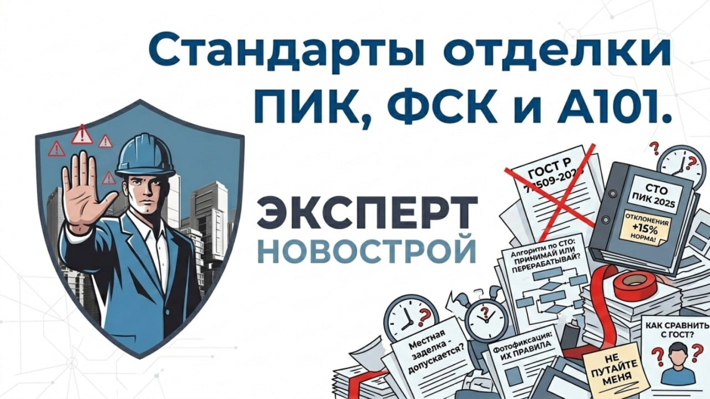
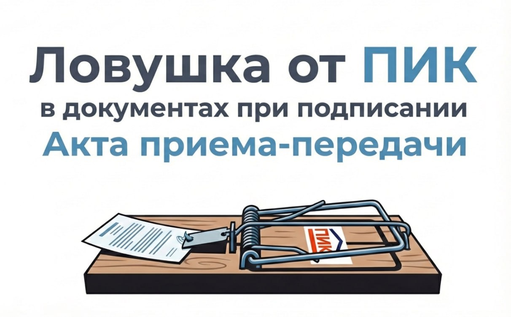
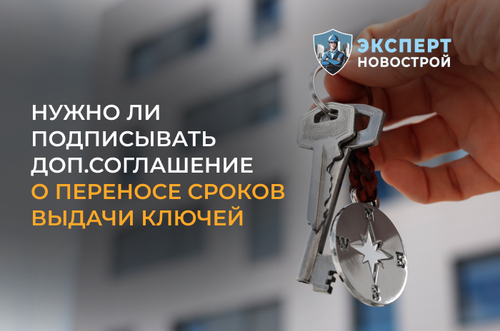
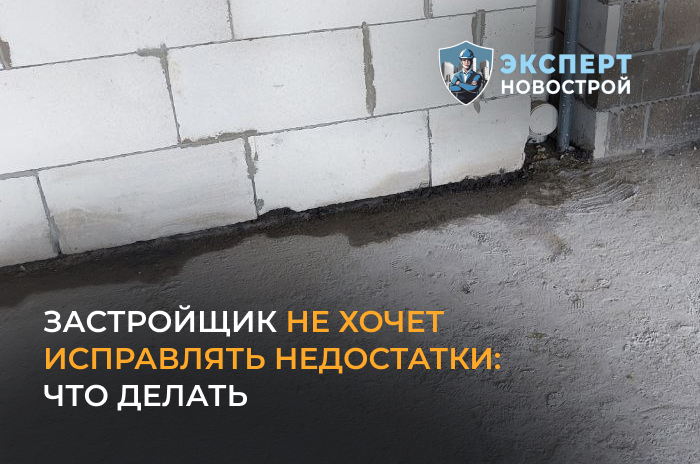
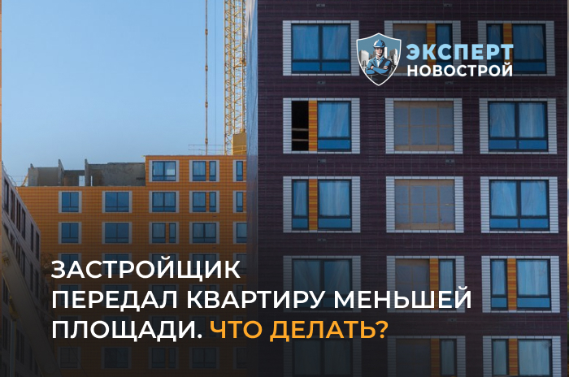

Новости

Застройщики ПИК, ФСК и А101 внедряют собственные стандарты отделки
Не подписывайте доп.соглашения от ПИК

ПИК подсовывает дольщикам "ловушку" в документах при подписании АПП
Что такое РВЭ и ЗОС и что должен знать дольщик

Нужно ли подписывать доп.соглашение о переносе сроков сдачи квартиры?

Застройщик не хочет исправлять недостатки. Что делать?
Можно ли подать в суд за просрочку сдачи квартиры после отмены моратория
